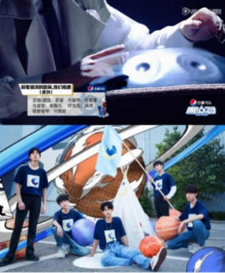
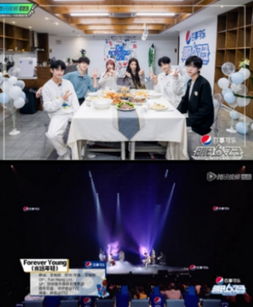
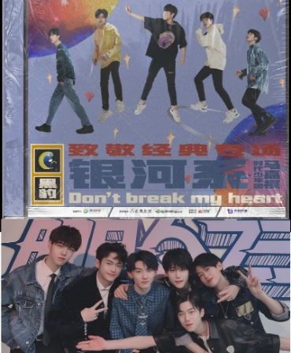

银河的星球轨迹
从翻唱到改变到原创，银河系在这片宇宙里留下一点点小小的星球轨迹
这首歌名叫《我的舞台》，希望能在明日找到属于我自己的舞台，在舞台上跟银河系一样发光发亮  每个人都是颗独特的星球，之后的路还很长，让我们一起把光当梦想一样追，一起追到最后吧
每个人都是颗独特的星球，之后的路还很长，让我们一起把光当梦想一样追，一起追到最后吧 这是我们银河系的第一首原创，少了任何一个人的帮忙都不会有这么棒的作品，谢谢你们  今天银河系正式组成五人乐团了！我们在银河系的不同角落里，因为音乐相遇，值得庆幸，值得珍惜  但我觉得爱情是很甜蜜永恒的，我们银河系也是，所以我们会更加坚定地去演奏，希望大家会喜欢  感谢小马哥的卫星,让我收到了非常开心的信号,跟我们一起愉快地致敬了经典